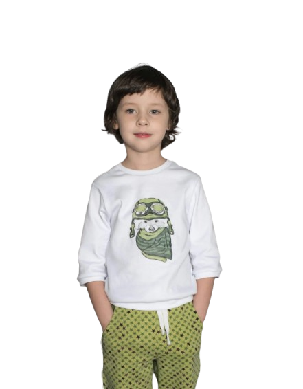
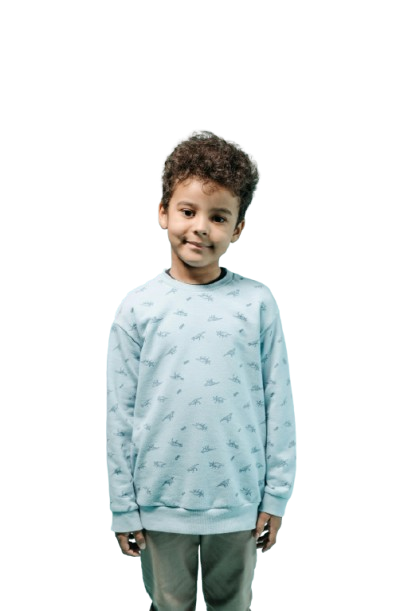
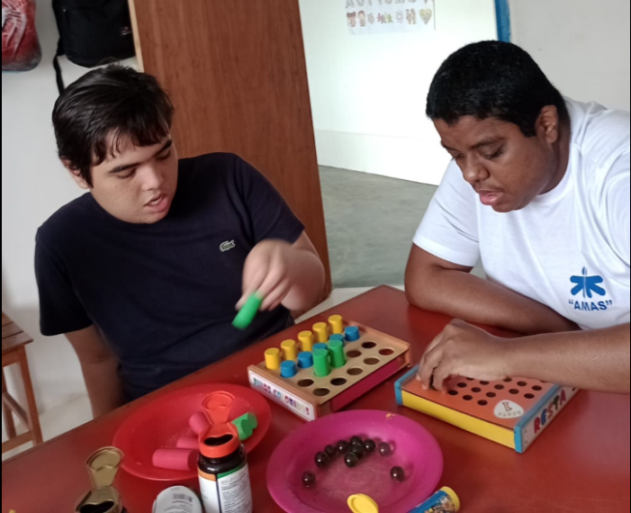
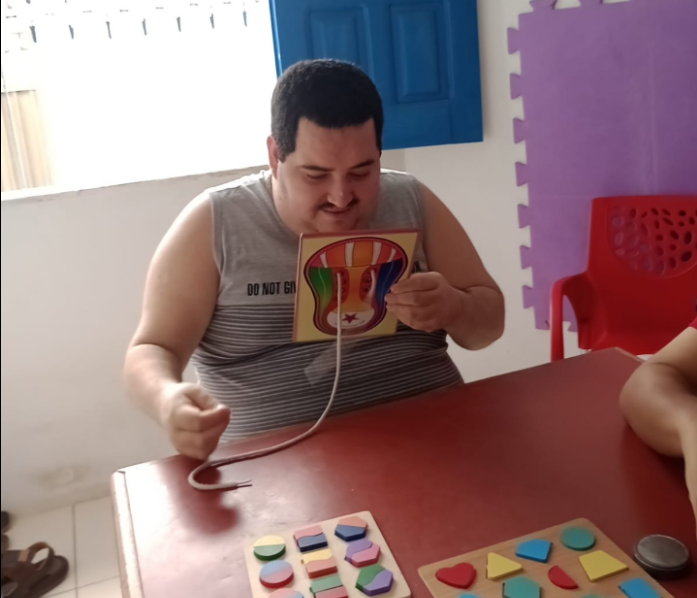
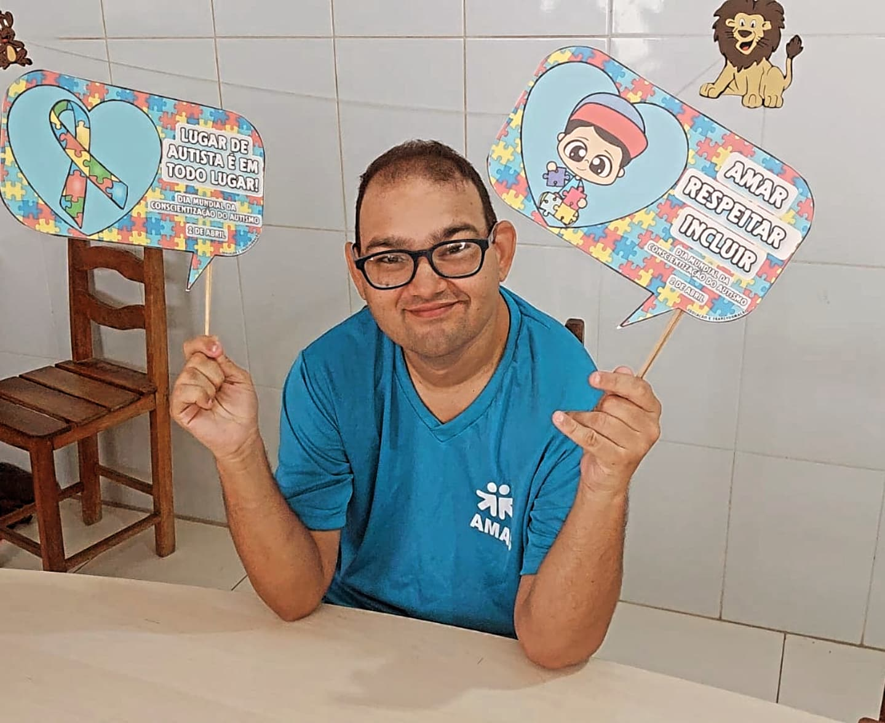
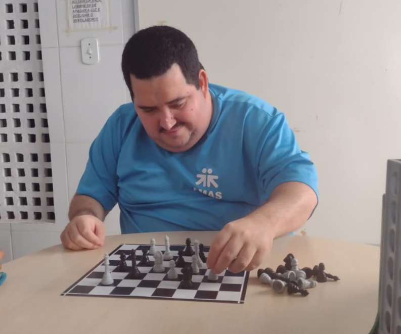
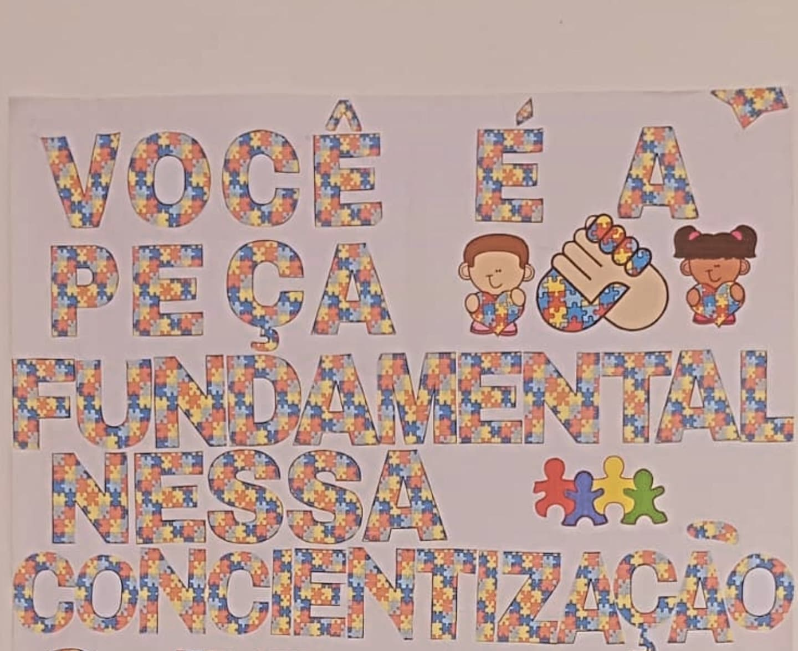

O autismo é uma parte desse mundo, não um mundo à parte.
Doe AgoraQuem Somos?
Fundada em 1987, a AMAS (Associação de Amigos do Autista em Sergipe) é uma entidade sem fins lucrativos e pioneira no atendimento a pessoas com autismo e distúrbios de comportamento. Ao longo de mais de 30 anos de atuação, a instituição tem ampliado seus serviços com foco na qualidade do atendimento e na inclusão.
Além do trabalho especializado, a AMAS promove eventos, cursos e palestras para conscientizar e informar a comunidade sobre o Transtorno do Espectro Autista (TEA).

Nossos Projetos:
- Musicoterapia
- Socialização
- Massoterapia
- Atividade Física
- Psicologia
- Arteterapia





 Veja mais no Instagram
Veja mais no Instagram
Entre em contato:
📞 (79) 3255 - 2602
📧 amas.sergipe@gmail.com
📍 Av. Mário Jorge Menezes Vieira, 1012 - Coroa do Meio, Aracaju - SE, 49035-660